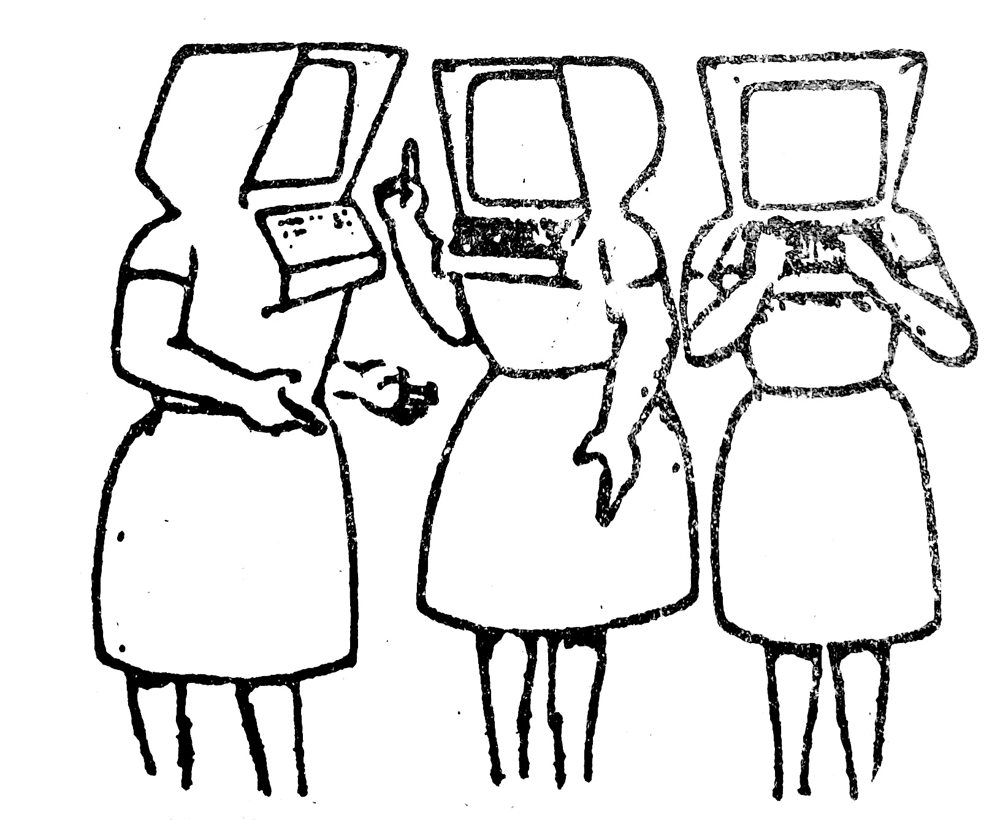
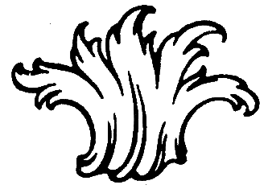

The gutter column of The Bitters Column is a research into various publications from the feminist print activism movement in the ‘70s, looking at the traces of women and queer editorial practices. The rise of radical feminist print and publishing was driven by social shifts in society, along with changes in printing and typesetting technologies. Prior ‘60s books and newspapers were typeset on Linotype or Monotype machines, a technology that required skilled workers. In the ‘70s, shifts in typesetting and printing introduced photo-offset, Xerox, mimeograph, and photocopying technologies, putting the means of production into the hands of amateurs and deskilled workers. Self-produced pamphlets, newsletters, and magazines sprung from radical political groups: feminist, Black, and gay liberation, to share ideas within and between movements. The collective labor involved in editing, typesetting, printing, binding, and mailing, dismantled traditional hierarchical roles within editorial work, and was both practical as a means to build communities. For these groups, graphic design was not a profession but a practice — a way of thinking, making, and organising.
Four Women Sitting at the Machine, Thinking
During my studies, I’ve been going to archives to look at printed matter from these movements, and even better, meeting members of the collectives that made them. The inspiration for the first issue of The Bitters Column followed a coincidental meeting in January 2026, with the librarian Lisbeth Jørgensen at Kvindehuset — The Woman’s House in Copenhagen, operating since 1978 as a feminist non-profit, user-controlled house that hosts political and cultural activities to this day. From 1982 till 1994, four women ran an offset press on the attic of the building, and with all inhabitats of the building involved, collectively producing and publishing their own newsletter, ‘Hvidløgspressen: et blad for lesbiske’, which translates to, ‘Garlic Press: a magazine for lesbians’. In The Bitters Column, Issue 2, I recalled a fragment of our conversation:
Jørgensen tells me that the three women she worked together with on the newsletter are all dead today. She emphasises that the work on the press killed them slowly, from breathing in the fumes of deadly chemicals in a crowded attic space for years.16
16. Askerup, The Bitters Column, Issue 2, 2026.
This amplifies Jørgensen’s care for the naming of her community, as so much gets lost in the messy history of graphic design. Martha Scotford defines the contrasting neat history involving the simple packaging of one white, male, middle-class designer working for a client. Messy history then, represents designers who don’t work alone but in changing collaborations; design works for local causes at the scale of a cottage industry, in practices organised around personal issues and domestic life.17
17. Scotford, Messy History vs. Neat History: Toward an Expanded View of Women in Graphic Design, Visible Language 28, no. 4 (1994), 371.
Jørgensen gifted me a box of their newsletters, offering their graphic world a source of inspiration. In the making of this publication, I kept returning to their archive, simply intrigued by its materiality and form as traces of their collective labor, rather than attempting to represent it. On the cover of the first issue of The Bitters Column, I put an image found in Garlic Press of three women with computer-heads. The women are in active conversation with one another, yet encapsulated in the personal computer. [Fig. 6]

TBC
The Bitters Column (TBC)18 is a publication searching for hidden pasts by lifting the carpet and collecting cases swept away. Through its uttering, we might be able to hear the late and the latent, the in-process, the un-named, the un-paid, the longing, the invisible, the dormant — even if they seem to disappear again in its ephemeral matter and into oblivion.
18. The Bitters Column has the abbreviation TBC, short for: to be confirmed and to be continued, and expands: to be copied, cut, conversed, compiled, collaborated, co-operated, complicated, cohabitated…
Through weaving a feminist critical perspective into the publication, it becomes a site ‘to form a practice’. I realised that woman’s work corresponds to a particular organisation of time and space, that refers to the immediate and the everyday. In this sense, publishing — ‘making things public’, is a performative and collaborative act, that asks for reclaiming this space. The Bitters Column continues in the coming issues, with all parties involved: contributors, friends, and readers, making communities around the publication and its processes.

